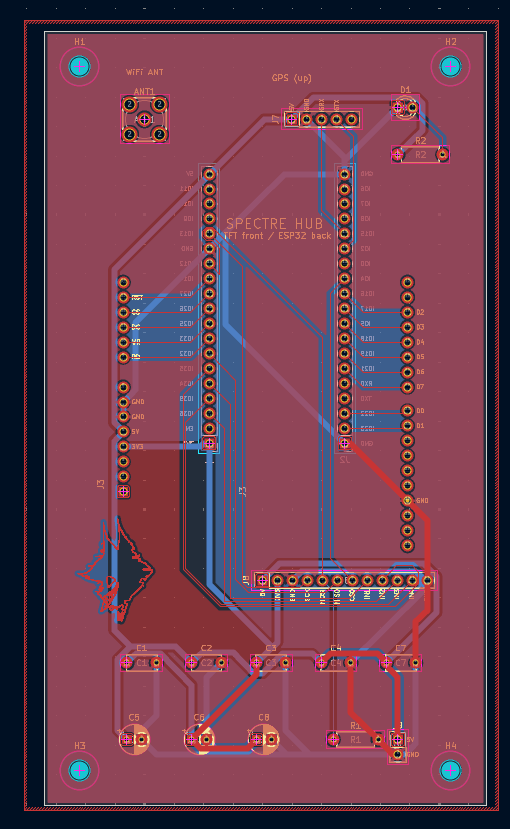
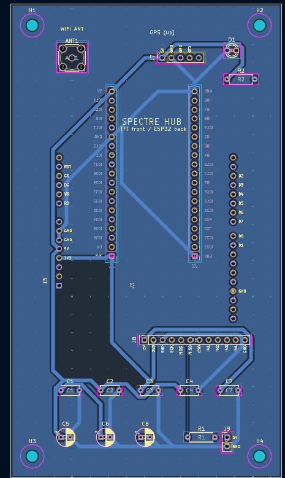
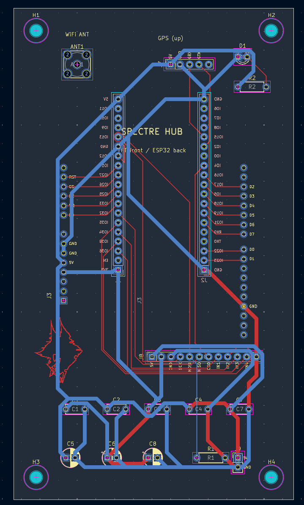

War-rig-phantom: SPECTRE build In build
A portable wireless recon and counter-surveillance kit. SPECTRE is the handheld: an ESP32-WROOM-32U with a router antenna, a 3.5" parallel screen and GPS, running the ported CyberDeck orchestrator and driven from the CONSOLE phone app over BLE. It scans WiFi and BLE, captures handshakes to the phone, and — on the authorized bench only — runs active WiFi/BLE tools. The passive SENTINEL C3+UNO watcher and the BEACON watch run beside it. One 18650 pack powers them all.
- Hub ESP32-WROOM-32U, ported CyberDeck orchestrator
- Display 3.5" 320×480 ILI9488, 8-bit parallel
- Power 3x 18650 in parallel, about 6 hours (estimate)
- Radio built-in 2.4 GHz WiFi + BLE; one expansion slot
- Active tools transmit — authorized own-lab use only
Boards
Every board has one fixed proper name (the role alias is in brackets). It is used in the docs and firmware, and should be on a label stuck to the board. Each module works on its own. The only cable between modules runs inside SENTINEL, from its C3 to its UNO readout.
| Name | Board | Job | State |
|---|---|---|---|
| SPECTRE (HUB) | ESP32-WROOM-32U dev board + 3.5" ILI9488 8-bit parallel TFT + NEO-7M GPS (phone/BLE control, no touch/SD/buttons) | Active handheld running the ported orchestrator: WiFi scan/deauth/evil-portal/packet-monitor/wardrive, BLE scan/spam, handshake→pcap to phone, HID. Built-in 2.4 GHz radio | Firmware done, display verified; modes untested |
| SENTINEL (WIFI-NODE+READOUT) | ESP32-C3 + Arduino UNO R3 + 3.5" TFT shield (soldered pair, one-way 19200 UART) | Passive watcher, never transmits: WiFi/BLE promiscuous capture sorted by persistence (flags trackers/tails/attacks). C3 = brain, UNO = screen | Compile-verified |
| BEACON (STATUS) | ESP32-C3 + 128×64 OLED | Removable watch: logs GPS and WiFi scans and sends a CSV to a phone. Docks to the kit now and then | Working |
| CONSOLE | Android (Flutter) phone app | Drives SPECTRE over BLE; receives the handshake .pcap and GPS data | APK built |
| RELAY (BLE-SCAN) | ESP32-1732S019 (ESP32 + 1.9" screen) | On hand, not in this build: SPECTRE covers BLE | Spare |
Retired on 2026-11-02: the Raspberry Pi 5 hub, the 7" display and its driver board, the RTL-SDR and the ESP32-S3. The Pi was overkill for this kit.
SPECTRE firmware
SPECTRE runs the ported CyberDeck orchestrator (spectre/v1/), not stock cifertech ESP32-DIV — that was only a reference example. One ESP32-WROOM-32U paints the TFT, runs the GPS and radio, and takes commands from the CONSOLE phone app over BLE. Everything runs on the ESP32's built-in 2.4 GHz radio; a single radio is time-shared, so BLE drops while a WiFi mode is active (GPS always stays up).
Passive modes
- WiFi Scan: networks with OUI vendor + encryption type
- Packet Monitor: waterfall over channels
- BLE Sniffer: MAC, RSSI, packet count, tracking table
- Wardrive: live GPS-stamped APs on screen (no logging)
- Satellite Scan: GPS fix check (BLE stays up)
- Handshake → .pcap: EAPOL captured, streamed to the phone
Active modes (TX — own lab only)
Deauth (with an app-chosen target), beacon/probe/karma flood, evil portal, BLE spam, a best-effort BLE adv-flood "jammer", and HID. These transmit on the built-in 2.4 GHz radio — use only against your own test laptop and spare router on an isolated bench. There is no NRF24/CC1101 in the firmware; the "jammer" is not a true PHY jammer.
Flashing
Build spectre/v1/spectre/spectre.ino with User_Setup_SPECTRE.h and flash the merged binary at offset 0x0 with esptool. (The committed prebuilt/*_MERGED.bin use the pre-remap pins — rebuild after the 2026-11-15 pin remap.) GPS is on GPIO15/2, not the USB-serial pins, so flashing is unaffected.
Shopping list
Tick parts off as you collect them; ticks are saved in this browser. The nde3d order was placed on 2026-11-02 (collect at Strand, pay on collection). Prices are from that order and exclude shipping.
| Part | Qty | Price | Role |
|---|
Power
Three 18650 cells in parallel feed one single-cell 5V 2A charge/boost module, and its 5 V output powers every module. Estimated load for the whole kit is about 600 to 850 mA typical and 1.4 A peak at 5 V. The pack holds about 24 Wh, so expect about 6 hours. Measure it; the cells are probably below their label.
3x 18650 in parallel -> master switch -> 5V 2A charge/boost module -> 5 V rail
^ |-> SPECTRE: ESP32 VIN, TFT VCC, GPS VCC
USB-C breakout (charge pads) ----+ |-> SENTINEL: C3 5V and UNO 5V
+-> BEACON dock
Charging
The module has no USB port. Solder a USB-C breakout, or a cut USB cable, to its charge input pads. Charge with the master switch off until you know it handles charge-while-running.
3.3 V parts
The GPS runs from the ESP32's 3V3 pin (feed it 5 V only if it won't get a fix). The TFT takes 5 V on VCC, but its logic does not self-regulate — wire ESP32 3V3 → the shield's 3.3V pad or the panel shows white. All signal lines are 3.3 V.
Battery level
There is no battery gauge on SPECTRE (BATTERY_ADC_PIN is -1). Check the cells with a meter until a gauge is added.
Wiring SPECTRE carrier
SPECTRE is one assembly: the ESP32, the 3.5" ILI9488 8-bit parallel TFT and the GPS wired straight to the board — no protoboard, no button matrix, no touch and no SD (the handheld is driven from the CONSOLE phone app over BLE). Pins come from spectre/v1/User_Setup_SPECTRE.h and spectre.ino (the optimized SPECTRE-carrier mapping, remapped 2026-11-15); the carrier-connector map is hardware/spectre-pcb/PINOUT.md. The SENTINEL C3→UNO wiring is on its own page.
![Wiring for the ESP32, 3.5 inch parallel TFT and GPS. Three 18650 cells in parallel go through the master switch to a 5 V 2 A charge/boost module, charged from a USB-C breakout. The 5 V rail feeds ESP32 VIN and the TFT. The 3.5 inch ILI9488 8-bit parallel TFT uses control pins CS on GPIO 27, DC on 26, RST on 14, WR on 25, RD on 33, and the 8-bit data bus D0 to D7 on GPIO 22, 23, 16, 17, 5, 18, 19 and 21. On the right, the GY-NEO-7M GPS wires straight to the ESP32 on UART2: VCC to 3V3, GND to GND, TXD to GPIO 15 and RXD (optional) to GPIO 2. One expansion SPI slot is reserved for a future radio. A router antenna goes on the ESP32's U.FL socket.](wiring.svg)
SPECTRE (ESP32-WROOM-32U)
| GPIO | Goes to |
|---|---|
| 27 | TFT CS |
| 26 | TFT DC / RS |
| 14 | TFT RST |
| 25 | TFT WR |
| 33 | TFT RD |
| 22, 23, 16, 17 | TFT D0, D1, D2, D3 |
| 5, 18, 19, 21 | TFT D4, D5, D6, D7 |
| 15 (RX2) | GPS TXD |
| 2 (TX2) | GPS RXD (optional) |
| 3V3 / GND | GPS VCC / GND, and TFT 3.3V pad |
| VIN | 5 V rail from the boost module |
| 13, 12, 32, 4 | Expansion SPI (future radio, unused) |
Rules
- Wire ESP32 3V3 → the TFT's 3.3V pad — the shield doesn't self-regulate, and without it the panel shows white.
- Backlight is hardwired to VCC (no PWM pin). The firmware calls invertDisplay(true) after init.
- GPS is on GPIO15/2 (UART2), not the USB-serial pins, so flashing is unaffected. Runs from 3V3; if it never gets a fix, feed VCC from 5 V instead (GND common).
- No touch, no SD, no buttons: driven from the CONSOLE phone app over BLE.
- Common ground between every part. No battery gauge (BATTERY_ADC_PIN is -1).
- If an expansion radio is fitted: R1 10k pulldown on GPIO12 and a 10k pull-up on GPIO4 (boot-strap insurance).
Bring-up order
- Flash the merged spectre.ino binary at 0x0
- TFT (confirm colours), then GPS, then the antenna
- Battery, switch and boost module last, all on USB until then
PCB Hand-routed
A custom carrier PCB for SPECTRE (KiCad, on branch spectre-pcb, 75 × 131.7 mm). The TFT shield plugs in on the front; the ESP32-WROOM-32U sits on the back. Hand-routed, DRC-clean, fab files generated — but hardware-untested. Renders below.




Full KiCad project, pinout and fab files (gerbers, BOM, pick-and-place) are in hardware/spectre-pcb/.
Build order
- Check that the ESP32 is a full dev board with USB and headers, and find its COM port.
- Build spectre/v1/spectre/spectre.ino with User_Setup_SPECTRE.h and flash the merged binary: esptool --chip esp32 -p COMx write-flash 0x0 spectre_MERGED.bin at 921600 baud (115200 if that fails).
- Wire the TFT (all 13 lines) and ESP32 3V3 → the TFT 3.3V pad. Confirm the colours come up correctly (black background, coloured text).
- Wire the GPS straight to the ESP32 on UART2 (VCC 3V3, GND, TXD to GPIO15, RXD to GPIO2). Check satellites show in the Satellite Scan mode. GPS is off the USB-serial pins, so no need to unplug it to flash.
- Fit the router antenna on the U.FL socket. From the CONSOLE app over BLE, test the WiFi scan, BLE scan and a short wardrive.
- Bench-test the power system: matched cells, module output, then SPECTRE and SENTINEL on battery.
- Measure every part and lay out the case.
- On the authorized bench only, test the active-TX modes against your own router/laptop.
- Walk test and a runtime measurement.
Case Layout planned
The modules stack inside the 22 × 22 cm clamshell by their proper names. The whole bottom holds the power: the powerbank, the three 18650 cells and the charging station. Two power lines run up the right-hand side into the top section, where a USB hub sits across the middle with its ports facing up. Each module above the hub plugs in with its own power cable (SENTINEL uses two). The phone (CONSOLE) isn't stored in the case. Schematic, not to scale — the foam gets cut once the parts are measured.
![Top-down plan of the clamshell case interior, split into a top and a bottom section. The bottom section is filled with power: a powerbank, three 18650 cells in holders, and the charging station. Two power lines run up the right-hand side into the top section, where a USB hub sits across the middle with its ports facing up. Above the hub sit three modules, each dropping its own USB power cable to a hub port: SPECTRE (the ESP32-WROOM handheld with 3.5 inch parallel TFT and GPS), SENTINEL (the ESP32-C3 plus UNO and 3.5 inch readout, using two cables), and BEACON (the removable logging watch). A hinge runs down the left edge. A side panel lists the module names and notes: CONSOLE is the phone and is not stored in the case, RELAY is a spare, and the inner width is about 205 mm and not yet measured.](case-layout.svg)
To try layouts in 3D, open the case planner. Set each part's size, drag parts between the lid and base, and check that the lid still closes. It also exports a starting OpenSCAD filler.
Later
None of this is needed for the build above.
Laptop analysis
Collect SPECTRE's handshake .pcap captures (pulled to the phone) and the BEACON watch CSVs on a laptop. Merge them, look for devices seen in several places, and learn from what turns up.
Expansion radio
SPECTRE's one expansion SPI slot could take a single CC1101 (sub-GHz 433 MHz) or NRF24 (2.4 GHz). Not the 3× shield — the parallel TFT leaves only one slot. Wire the R1/GPIO4 boot resistors first.
Battery gauge
A voltage divider on a spare ADC pin, with BATTERY_ADC_PIN set in a source build, would show the battery level on screen.
Cellular
Spotting fake cell towers (IMSI catchers) needs dedicated hardware. It is out of scope.